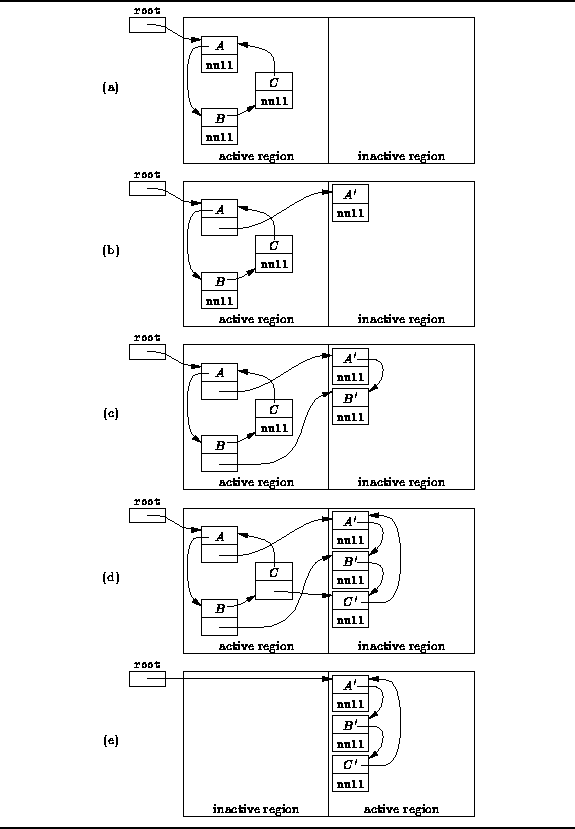

Data Structures and Algorithms
with Object-Oriented Design Patterns in Java
Data Structures and Algorithms
with Object-Oriented Design Patterns in JavaThe stop-and-copy algorithm divides the heap into two regions--an active region and an inactive region. For convenience, we can view each region as a separate heap and we shall refer to them as activeHeap and inactiveHeap. When the stop-and-copy algorithm is invoked, it copies all live objects from the activeHeap to the inactiveHeap. It does so by invoking the copy method given below starting at reach root:
for each root variable r
r = copy (r, inactiveHeap);
swap (activeHeap, inactiveHeap);
The copy method is complicated by the fact that it needs to update all object references contained in the objects as it copies those objects. In order to facilitate this, we record in every object a reference to its copy. That is, we add a special field to each object called forward which is a reference to the copy of this object.
The recursive copy method given below copies a given object and all the objects indirectly accessible from the given object to the destination heap. When the forward field of an object is null, it indicates that the given object has not yet been copied. In this case, the method creates a new instance of the object class in the destination heap. Then, the fields of the object are copied one-by-one. If the field is a primitive type, the value of that field is copied. However, if the field refers to another object, the copy method calls itself recursively to copy that object.
void Object copy (Object p, Heap destination)if (p == null) return null; if (p.forward == null)
q = destination.newInstance (p.class); p.forward = q; for each field f in p
if (f is a primitive type) q.f = p.f; else q.f = copy (p.f, destination);
q.forward = null;
return p.forward;
If the copy method is invoked for an object whose forward field is non-null, that object has already been copied and the forward field refers to the copy of that object in the destination heap. In that case, the copy method simply returns a reference to the previously copied object.
Figure  traces the execution of the stop-and-copy
garbage collection algorithm.
When the algorithm is invoked and before any objects have been copied,
the forward field of every object in the active region is null
as shown in Figure (a).
In Figure (b),
a copy of object A, called A', has been created in the inactive region,
and the forward field of A refers to A'.
traces the execution of the stop-and-copy
garbage collection algorithm.
When the algorithm is invoked and before any objects have been copied,
the forward field of every object in the active region is null
as shown in Figure (a).
In Figure (b),
a copy of object A, called A', has been created in the inactive region,
and the forward field of A refers to A'.

Figure: Stop-and-copy garbage collection.
Since A refers to B,
the next object copied is object B.
As shown in Figure (c),
fragmentation is eliminated by allocating storage for B'
immediately next to A'.
Next, object C is copied.
Notice that C refers to A,
but A has already been copied.
Object C' obtains its reference to A'
from the forward field of A as shown in Figure (d).
After all the live objects have been copied from the active region
to the inactive region,
the regions exchange their roles.
As shown in Figure (e),
all the garbage has been collected and the heap is no longer fragmented.
 Copyright © 1998 by Bruno R. Preiss, P.Eng. All rights reserved.
Copyright © 1998 by Bruno R. Preiss, P.Eng. All rights reserved.